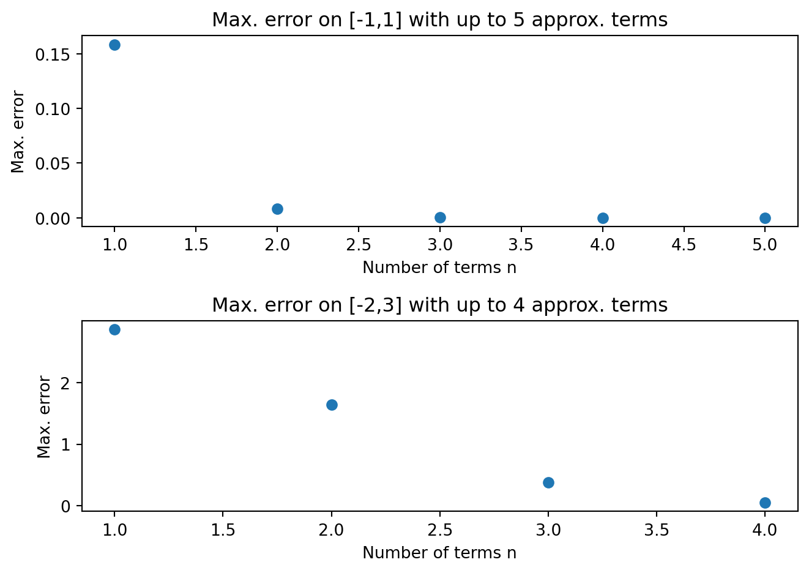

# Import any packages needed
import numpy as np
import scipy.optimize as optimize
import scipy.stats as stats
import scipy.special as special
import matplotlib.pyplot as pltPractice exam 2
Solutions to the practice exam
Introduction
NoteImportant
The difficulty of the questions does not indicate the level at which you should master a particular topic. A topic tested by a relatively easy question here might be tested by a more difficult question on the actual exam.
The description on TestVision will read approximately as follows:
On the next page you will find four programming questions for the Python II module, worth a maximum of 5 + 7 + 13 + 25 = 50 points.
Use the following (MANDATORY) template for your answers, and upload it on the next page: python-ii-template.
In addition to correctness, your submission will be assessed against the usual “Good coding” criteria: efficiency, avoidance of hard coding, DRY, single responsibility, coding style and documentation, and KISS.
Packages seen in the course materials are included in the template.
Question 1 [5 pts]
The function f is defined by
f(x)= \begin{cases} -x+1 & \text{if }x<0,\\ x^2+x+1 & \text{if }0\leq x<1,\\ 3 & \text{if }x\geq1. \end{cases}
Write a function f() that takes as input a one-dimensional array x=[x_0,\dots,x_{n-1}]\in\mathbb R^n and outputs the one-dimensional array [f(x_0),\dots,f(x_{n-1})]. Do not use for loops, while loops, or if statements. For x=[-5,-0.5,0.5,4,9], the output should be [6,1.5,1.75,3,3].
def f(x):
return (
(x < 0) * (-x + 1)
+ ((x >= 0) & (x < 1)) * (x**2 + x + 1)
+ (x >= 1) * 3
)
# Test input
x = np.array([-5, -0.5, 0.5, 4, 9])
print(f(x))[6. 1.5 1.75 3. 3. ]Question 2 [7 pts]
Write a function quantities() that takes as input a one-dimensional array x\in\mathbb R^n, and a two-dimensional n\times n array A\in\mathbb R^{n\times n} where the entry at position (i,j) is denoted by a_{ij} for i,j=0,\dots,n-1. It should output the following two quantities:
- The row products \prod_{j=0}^{n-1}a_{ij} for i=0,\dots,n-1.
- The quantity \sum_{i=0}^{n-1}\sum_{j=0}^{n-1}a_{ij}e^{x_ix_j} where e\approx2.71828 is Euler’s number.
Do not use for loops, while loops, or if statements. For x=[-1,1,2] and A=[[-5,4,9],[1,1,1],[2,1,4]], the outputs should be [-180,1,8] and \approx225.63.
def quantities(x,A):
first = np.prod(A,axis=1)
second = np.sum(A*np.exp(x*x[:,None]))
return first, second
# Test input
x = np.array([-1,1,2])
A = np.array([[-5,4,9],[1,1,1],[2,1,4]])
first, second = quantities(x,A)
print(first)
print(second)[-180 1 8]
225.625670338062Question 3 [8 + 5 = 13 pts]
For n independent and identically distributed (i.i.d.) random variables X_0,\dots,X_{n-1} with common cumulative distribution function (cdf) F:\mathbb R\rightarrow[0,1], the cumulative distribution function of X_{\max}=\max\{X_0,\dots,X_{n-1}\} is given by
F_{\max}(x)=F(x)^n.
- [8 pts] Write a function
max_median()that takes as input a continuous probability distribution (astats.rv_continuousobject) and a positive integer n. It should output a median of the random variable X_{\max} as a scalar, rather than a list or array. For a continuous cdf, a median satisfies F_{\max}(x)=0.5. Assume that this equation has a unique solution for the input distribution. Usefsolve()in your solution, taking the median of the input distribution as the initial guess.
Hint: Define an auxiliary function that models the equation to be solved.
def equation(x, dist, n):
return dist.cdf(x) ** n - 1/2
def max_median(dist, n):
result = optimize.fsolve(equation,x0=dist.median(),args=(dist,n))[0]
return result- [5 pts] Test your function
max_median()by printing its output for the following inputs:
- A normal distribution with mean \mu=5, standard deviation \sigma=2, and n=3.
- A uniform distribution on [4,9] with n=10.
- A gamma distribution with shape parameter a=3, scale parameter 4, location parameter 0, and n=2.
If your function works correctly, the outputs should be \approx6.64, 8.67, and 14.63.
dist = [stats.norm(loc=5,scale=2), stats.uniform(4,9-4),
stats.gamma(a=3,scale=4)]
n = [3, 10, 2]
for i in range(len(n)):
print(max_median(dist[i],n[i]))6.6386572396672205
8.665164957684022
14.62542588068095Question 4 [8 + 8 + 9 = 25 pts]
The Maclaurin approximation to \sin(x) using its first n nonzero terms is
M(x,n)=\sum_{k=0}^{n-1}\frac{(-1)^k}{(2k+1)!}x^{2k+1}.
This polynomial has degree 2n-1; here n counts the number of terms, rather than the polynomial degree.
- [8 pts] Write a function
M()that takes as input a scalar x\in\mathbb R and a positive integer n. It should output the number M(x,n). You can compute the factorial r!=r(r-1)\cdots1 of a positive integer r withspecial.factorial(r)(the importimport scipy.special as specialis included above; make sure it is enabled in the template). Do not useforloops in your solution.
For x=0.5 and n=5, the function should output \approx0.48.
def M(x,n):
a = np.arange(0,n)
sign = (-1)**a
fact = special.factorial(2*a + 1)
return np.sum(np.divide(sign,fact)*x**(2*a + 1))
x = 0.5
n = 5
print(M(x,n))0.4794255386164159For given x\in\mathbb R and a positive integer n, we define the approximation error with respect to the sine function as
\text{Error}(x,n)=|M(x,n)-\sin(x)|.
- [8 pts] Write a function
max_errorthat takes as input finite scalars a,b\in\mathbb R with a<b, and a positive integer n, and returns the value of E(a,b,n)=\max_{x\in[a,b]}\text{Error}(x,n). That is, it returns the maximum error over [a,b]. Useminimize_scalar()with theboundedmethod.
For a=-4, b=2, and n=5, your function should output \approx0.095.
def objective(x, n):
return -np.abs(np.sin(x) - M(x, n))
def max_error(a, b, n):
result = optimize.minimize_scalar(
objective, bounds=(a, b), args=(n,), method="bounded"
)
return -result.fun
a = -4
b = 2
n = 5
print(max_error(a, b, n))0.09507280323290379- [9 pts] Create a figure with two subplots, one for each parameter combination (a,b,N)\in\{(-1,1,5),(-2,3,4)\}. Each subplot should contain a scatter plot of E(a,b,n) against n for n=1,\dots,N, with title “Max. error on [a,b] with up to N approx. terms,” replacing a, b, and N with their values. You may use
forloops. Your figure should look like the one below.
r = 2
fig = plt.figure()
combi = [(-1,1,5),(-2,3,4)]
for p in range(r):
a, b, N = combi[p][0], combi[p][1], combi[p][2]
result = np.zeros(N)
for i in range(1,N+1):
result[i-1] = max_error(a,b,i)
x = np.arange(1,N+1)
# Add subplot
apx = fig.add_subplot(r,1,p+1)
apx.scatter(x,result)
apx.set_xlabel('Number of terms n')
apx.set_ylabel('Max. error')
apx.set_title('Max. error on [%.i,%.i] with up to %.i approx. terms' % (a,b,N))
# Tighten layout
plt.tight_layout()
# Show plot
plt.show()